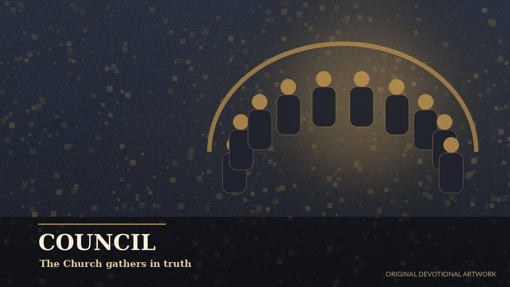

YOUR DAILY MOMENT OF STILLNESS
Be present.
Begin with God.
A short prayer. An open heart.
There is room to begin again today.
A little stillness. Every day.
YOUR DAILY MOMENT OF STILLNESS
A short prayer. An open heart.
There is room to begin again today.
SEVEN SMALL BEGINNINGS
Return to the essentials, one short practice at a time.
Meteora: Dimitris Eleftheriou · Athos: malenki ·
A quiet place to return
Remember the good. Name what is difficult. Bring both to God.
Stored in this browser, without encryption or cloud sync. Anyone using this browser profile may see it. Export a backup before clearing site data.
Faithfulness in small things
Keep it modest and sustainable. Agree on a prayer rule with your priest.
Downloads a repeating calendar event. Import it into your calendar and enable its alert. This app does not send push notifications.
Rooted in the Church
Your calendar, parish life, sacred images, and the witnesses who came before us.
Orthodox day

Commemorations
Sacred image
Your parish life

Cloud of witnesses

Historical memory
Discipline
Paschal cycle
Created light
Daily practice
Prayer for this day
Local calendar · 2026–2030
Select any supported date to open its local feast, fasting, prayer, martyr, and historical records.
Parish calendar · stored on this device
Add your parish or nearby Orthodox churches, keep service times, and import or export iCalendar files. Nothing is uploaded by this app.
Church directory
Saved locally
Service or parish event
Services and events
Prayer book
Search the local prayer library, filter it by category, and save favorites on this device.
Theotokos · archangels · saints · martyrs
A local library of genuine Orthodox icon images. The Theotokos and the Archangels are given priority, followed by saints and martyrs represented in the calendar.
The images are stored in this repository for offline use. Each card identifies its era and reuse status; full source notes are included with the project.
The cloud of witnesses
Each profile includes its commemoration date, responsible historical dating, and a concise biography under 150 characters.
Chronicle
Selected historical notes stored locally in the application.
Private and local
The timer, favorites, settings, and journal remain on this device unless you export them.

Stillness timer
Private journal
About this app
A static, offline-first devotional and historical reference designed for GitHub Pages.
Calendar, local church, prayer, martyr, history, fasting, and icon data are stored in this repository. The app has no required cloud database, login, analytics, or advertising.
Orthodox jurisdictions differ in calendar use, local saints, fasting practice, and lectionary details. Follow your priest and official parish calendar.
Calendar and biographical summaries are concise educational references. Approximate dates are marked, and uncertain traditions are described cautiously. Full notes are in the repository.
On iPhone, open this site in Safari, choose Share, then Add to Home Screen. On Android, open the browser menu and choose Install app or Add to Home screen. Allow the first visit to finish loading before going offline.
The service worker checks for newer published files. A new deployment updates the offline cache. Save your work and reload when an update is available.
Meteora: Dimitris Eleftheriou, CC BY-SA 4.0. Mount Athos: malenki, CC BY-SA 3.0. Resized and compressed; displayed with crops and overlays. Image derivatives retain their respective licenses. Existing icon credits are shown in the Holy Icons library.
Your display name, reflections, intentions, and prayer rule are saved locally. No login, cloud sync, analytics, or shared community is enabled. Backups include personal text; keep them somewhere private.
Version —
Local data window: January 1, 2026–December 31, 2030.